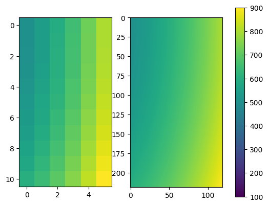

Multilinear Interpolation Comparison#
Imports#
from pymedphys._imports import numpy as np
from pymedphys._interp import interp
Set up known data#
INTERP_MULTIPLE = 20
x_num = 11
y_num = 6
z_num = 31
x = np.linspace(0, 10, x_num)
y = np.linspace(10, 20, y_num)
z = np.linspace(-20, 10, z_num)
X, Y, Z = np.meshgrid(x, y, z, indexing="ij")
values = X**2 + Y**2 + Z**2
Set up points for which to interpolate values#
xi = np.linspace(x[0], x[-1], x_num * INTERP_MULTIPLE - 1)
yi = np.linspace(y[0], y[-1], y_num * INTERP_MULTIPLE - 1)
zi = np.linspace(z[0], z[-1], z_num * INTERP_MULTIPLE - 1)
Interpolate using PyMedPhys interpolator#
values_interp = interp.multilinear_interp(
(x, y, z), values, axes_interp=(xi, yi, zi), algo="pymedphys"
).reshape((xi.size, yi.size, zi.size))
Plot a slice#
interp.plot_interp_comparison_heatmap(
values=values,
values_interp=values_interp,
slice_axis=2,
slice_number=0,
slice_number_interp=0,
)

Time comparisons#
PyMedPhys
%%timeit
interp.multilinear_interp(
(x, y, z), values, axes_interp=(xi, yi, zi), algo="pymedphys"
).reshape((xi.size, yi.size, zi.size))
378 ms ± 3.12 ms per loop (mean ± std. dev. of 7 runs, 1 loop each)
EconForge
%%timeit
interp.multilinear_interp(
(x, y, z), values, axes_interp=(xi, yi, zi), algo="econforge"
).reshape((xi.size, yi.size, zi.size))
---------------------------------------------------------------------------
ModuleNotFoundError Traceback (most recent call last)
File ~/work/pymedphys/pymedphys/lib/pymedphys/_vendor/apipkg/__init__.py:237, in AliasModule.<locals>.AliasModule.__getattribute__(self, name)
236 try:
--> 237 return getattr(getmod(), name)
238 except (ImportError, ModuleNotFoundError) as exc:
239 # Support inspection rejection
File ~/work/pymedphys/pymedphys/lib/pymedphys/_vendor/apipkg/__init__.py:216, in AliasModule.<locals>.getmod()
215 if not mod:
--> 216 x = importobj(modpath, None)
217 if attrname is not None:
File ~/work/pymedphys/pymedphys/lib/pymedphys/_vendor/apipkg/__init__.py:103, in importobj(modpath, attrname)
102 """imports a module, then resolves the attrname on it"""
--> 103 module = __import__(modpath, None, None, ["__doc__"])
104 if not attrname:
ModuleNotFoundError: No module named 'interpolation'
The above exception was the direct cause of the following exception:
ModuleNotFoundError Traceback (most recent call last)
Cell In[7], line 1
----> 1 get_ipython().run_cell_magic('timeit', '', '\ninterp.multilinear_interp(\n (x, y, z), values, axes_interp=(xi, yi, zi), algo="econforge"\n).reshape((xi.size, yi.size, zi.size))\n')
File ~/work/pymedphys/pymedphys/.venv/lib/python3.12/site-packages/IPython/core/interactiveshell.py:2541, in InteractiveShell.run_cell_magic(self, magic_name, line, cell)
2539 with self.builtin_trap:
2540 args = (magic_arg_s, cell)
-> 2541 result = fn(*args, **kwargs)
2543 # The code below prevents the output from being displayed
2544 # when using magics with decorator @output_can_be_silenced
2545 # when the last Python token in the expression is a ';'.
2546 if getattr(fn, magic.MAGIC_OUTPUT_CAN_BE_SILENCED, False):
File ~/work/pymedphys/pymedphys/.venv/lib/python3.12/site-packages/IPython/core/magics/execution.py:1185, in ExecutionMagics.timeit(self, line, cell, local_ns)
1183 for index in range(0, 10):
1184 number = 10 ** index
-> 1185 time_number = timer.timeit(number)
1186 if time_number >= 0.2:
1187 break
File ~/work/pymedphys/pymedphys/.venv/lib/python3.12/site-packages/IPython/core/magics/execution.py:173, in Timer.timeit(self, number)
171 gc.disable()
172 try:
--> 173 timing = self.inner(it, self.timer)
174 finally:
175 if gcold:
File <magic-timeit>:1, in inner(_it, _timer)
File ~/work/pymedphys/pymedphys/lib/pymedphys/_interp/interp.py:304, in multilinear_interp(axes_known, values, axes_interp, points_interp, algo, bounds_error, extrap_fill_value)
301 values_interp = interp3d_scipy(axes_known, values, points_interp)
303 elif algo.lower() == "econforge":
--> 304 values_interp = interp3d_econforge(axes_known, values, points_interp)
306 return values_interp
File ~/work/pymedphys/pymedphys/lib/pymedphys/_interp/interp.py:239, in interp3d_econforge(axes_known, values, positions)
236 def interp3d_econforge(axes_known, values, positions):
237 from pymedphys._imports import interpolation
--> 239 grid = interpolation.splines.CGrid(*axes_known)
241 return interpolation.splines.eval_linear(grid, values, positions)
File ~/work/pymedphys/pymedphys/lib/pymedphys/_vendor/apipkg/__init__.py:262, in AliasModule.<locals>.AliasModule.__getattribute__(self, name)
259 extra = sorted_extra
260 break
--> 262 raise ModuleNotFoundError(
263 f"""
264 PyMedPhys was unable to import "{no_scope_modname}.{name}".
265 The easiest way to fix this issue is to use the "[extra]"
266 option when installing PyMedPhys. Please run
267 "pip install pymedphys[{extra}]=={__version__}".
268 """
269 ) from exc
ModuleNotFoundError:
PyMedPhys was unable to import "interpolation.splines.CGrid".
The easiest way to fix this issue is to use the "[extra]"
option when installing PyMedPhys. Please run
"pip install pymedphys[user]==0.41.0-dev0".
Scipy
%%timeit
interp.multilinear_interp(
(x, y, z), values, axes_interp=(xi, yi, zi), algo="scipy"
).reshape((xi.size, yi.size, zi.size))